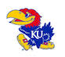
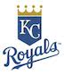
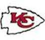

Sports
The University of Kansas
I grew up on the KU Jayhawks. My dad went to school there, and I was born and raised in the state of Kansas. I wanted to go there my whole life. I love the KU men's basketball team. I was six years old when they won the title in 1988. Since then I have seen them play in the title game three times and win it once.
The football team on the other hand, is not as good. I still like them because they are KU, but everyone knows that
Royals Baseball
I grew up with the Royals as my baseball team. They won the championship in 1985. Back in those days the team was great, and I was 3 years old. Our third baseman was the now legendary George Brett. I watched as he and Bo Jackson dominated other teams.
Brett soon moved over to first base, and mostly DH. I still loved watching him play though. He retired in 1993, one of a few players to reach 3,000 hits.
I remember when the stadium had astro turf on the ground instead of real grass and it was called Royals stadium. Since the owner, Ewing Kauffman died in 1994 they renamed the stadium for him. They also put in natural grass. I don't remember if that was before or after Kauffman died though.
Chiefs Football
The very first time I went to Arrowhead stadium, my dad put my brother and I in the car and wouldn't tell us where we were going. We were so excited, making all kinds of guesses as to what our destination was. They were all wrong, of course, and then we pulled up at Arrowhead.
I must have been between 8-10 years old or so, I don't remember exactly. I do remember War paint, the horse running up and down the field when we scored a touchdown. It was awesome!
I don't remember who we played, or who won that game. It was just the first of many Chiefs games that I would go to in my life. We were lucky enough to see one of the all time greats play here. Joe Montana was with the chiefs at the end of his career. Even though it was the end of his career he still took us to the AFC championship game in 1993.
To Top